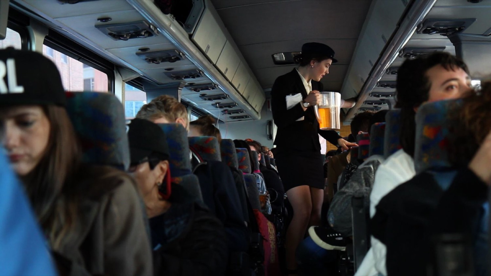

← Portfolio


fung wah onboard service
A commission for the Fung Wah Biennial — a Flux Factory project placing 25 artists on Chinatown bus routes between Boston, Philadelphia, and Baltimore. Verstappen created an onboard service experience combining old-fashioned luxury with complimentary snack and beverage service, designed in relation to the landscapes passing outside the window.
One of several artistic interventions — including performances, projections, and sound works — designed to amplify the transit experience and examine the politics of how people move through space.
